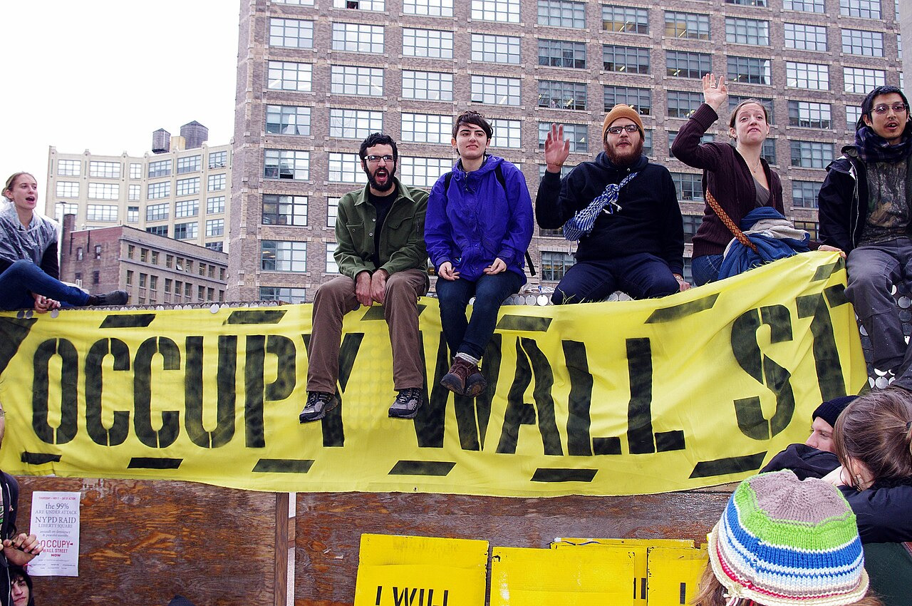

Tuesday you felt the freeze. Today you read the theory behind it, then build the four pieces of capacity that keep a cause from freezing: audience, goals, an editorial calendar, and a platform voice. This is the engine of Project 2.
Move at your own pace, but do the whole thing. The reading, the diagnosis, the case, and the strategy building are the instruction. Keep your Field Notebook open and your cause in mind. Project 2 is due next week, and most of what you draft here goes straight into it.
Where Tuesday left off: a hashtag can gather a huge crowd in days, but a crowd with no leaders, no agreed demand, and no way to decide together freezes the moment it's asked "what do you want, and who's in charge?" Zeynep Tufekci calls that the tactical freeze. Today we read why it happens, then build the muscle that prevents it.
1 · Scaling without the muscle
Older movements were forced to do slow, tedious organizing before they could gather anyone: the meetings, the phone trees, the training. Digital networks let you skip all of it and summon a crowd instantly. Tufekci's argument is that the slow work was secretly doing a second job. It was building the capacity to act as one. Skip the work, and you get the crowd without the capacity.
See it
Think of two ways to get 100,000 people into a square. Way one: six months of organizing, so by the time they arrive they already know each other, trust each other, and have agreed what they want. Way two: a hashtag that pulls 100,000 strangers overnight who share a feeling and nothing else. Same photo from a helicopter. Completely different machine underneath. The first can negotiate, pivot, and follow through. The second often can't, because there's no "underneath" at all.
Then and now: the purest fast-and-empty case
You have watched this happen. The flash mob, strangers summoned by a post to appear in a train station, dance for two minutes, and vanish, is Tufekci's argument in miniature. Instant assembly, zero capacity, nothing underneath, and by design it disperses before it could ever decide anything. A protest built the same way can pull a stunning crowd overnight and still have no way to turn that crowd into a demand anyone can answer.
Read the source (8–10 min)
Tufekci, Twitter and Tear Gas, the Introduction(free full book, Creative Commons PDF from the author's site). Read the Introduction, roughly the first 15 pages. She lays out the whole argument there.
"There is no need to spend six months putting together a single rally when a hashtag could be used to summon protesters into the streets… However, the tedious work performed during the pre-internet era served other purposes as well; perhaps most importantly, it acclimatized people to the processes of collective decision making."
Your turn: pick one thing your cause could do this week that would gather attention fast, and one slower thing that would build capacity. Which one are you actually doing right now, and which are you skipping?
Compare with one strong reading
A strong answer notices that the fast move produces a spike and the slow move produces a floor. Example: "FAST is a viral before/after photo of the polluted creek. SLOW is a text list of 40 neighbors who agreed to show up when asked. We have the photo instinct and no list, so every spike lands on nobody."
2 · Why leaderless freezes
Being leaderless sounds like pure democracy, and it has a clear upside: no single person can be arrested, bought off, or discredited to kill the movement. Tufekci is careful and fair about that. The cost shows up later. With no agreed way to decide, the group can't choose a new tactic, can't authorize anyone to negotiate, and can't take a partial win. So it defaults to repeating the one move everyone already recognizes.
See it
In Egypt in 2011, occupying Tahrir Square brought down a president in eighteen days. When the moment called for a different move, the crowd had no way to agree on one, so every road led back to the square. Tufekci's phrase for it: "Tahrir or bust." The thing that gave them their power was the only thing they could do, so it stopped working. You'll get the full story in the next section.
"Often unable to change course after the initial, speedy expansion phase, they exhibit a 'tactical freeze.'… by design, by choice, and by the evolution of these movements, they lack… the mechanisms to develop and agree on new paths to take."
Your turn: if your cause got its biggest moment tomorrow and someone in power offered you half of what you want, who in your cause is allowed to say yes or no? If the answer is "nobody" or "everybody," you've found your freeze.
Compare with one strong reading
A strong answer points to the missing decision structure, beyond a vague "we're disorganized." Example: "No one is authorized to negotiate, and we've never agreed how we'd decide. So we'd freeze, restate the maximum demand, and lose the deal. The fix is boring: agree now on three people and a rule for how they decide."
3 · What they got, and what they did not
A freeze is easy to describe and hard to believe until you look at the ledger. Here are two of the largest movements of the last twenty years, one that removed a head of state and one that changed how an entire country argues about money. Both won something. Neither won what it was asking for, and they failed in the same specific way. Read both, then sort the outcomes yourself before you see the answers.
Case one · Cairo, 2011
Tahrir Square, February 2011. Roughly a million people, no headquarters, no leadership, no list of demands.
What they were up against
Hosni Mubarak had run Egypt for thirty years, since 1981. He governed the entire time under an emergency law: police could detain anyone without charge and hold them indefinitely, gatherings of more than five people were illegal, and a case could be moved to a state security court with no appeal. Elections were held and the results were known in advance. Beatings and torture in police custody were routine, and everyone knew they were routine. That is the fear people lived inside, and it is why the uprising looked impossible until the week it happened.
Why it broke in 2011
In June 2010, plainclothes police dragged Khaled Said, twenty-eight years old, out of an internet cafe in Alexandria and beat him to death on the sidewalk. His family photographed his body at the morgue. The photo went around Facebook faster than the state could suppress it, and a page built around it gathered hundreds of thousands of Egyptians who had never been in a room together. The organizers called their protest for January 25, which in Egypt is National Police Day. They called it on Facebook.
How a phone ran an occupation
This is the part worth slowing down for, because it is the capacity question in its purest form. Nobody was in charge of Tahrir and the square still worked. Facebook event pages set the date and the meeting points. Twitter, tagged #Jan25, carried live reports of which bridges were blocked and where the police lines had formed, so marchers could reroute in minutes. Text message trees moved the same information to people who weren't online. Inside the square, people self-organized a field clinic, tent blocks, security checks at the entrances, trash crews, a stage, and a chain of hands passing in blankets and bread. On January 27 the government shut off the internet nationwide for five days, and the occupation did not break: people fell back to landlines, dial-up through foreign providers, fax machines, and word of mouth in a square that was already full.
So the network could assemble a million people, feed them, protect them, and keep them in place for eighteen days. What it never built was a way for those million people to decide anything together.
What happened after Mubarak
Mubarak resigned on February 11, 2011. Then Egypt needed a government, and the square had no candidate, no party, no platform, and nobody authorized to negotiate the terms of a transition. Two organizations in Egypt did have all of that, because both had spent decades building it: the military, and the Muslim Brotherhood. They were the only ones who could field anything. In June 2012 the Brotherhood's Mohamed Morsi won the presidency with about 52 percent.
Within five months Morsi issued a decree putting his own decisions beyond review by any court, and pushed a constitution written by an assembly his allies dominated to a rushed referendum. Many of the people who had filled Tahrir concluded they had traded one unaccountable ruler for another, and they went back to the streets. In July 2013 the army removed Morsi. That August, security forces killed somewhere between 800 and 1,000 protesters in a single day at Rabaa Square, the deadliest day in modern Egyptian history. General Abdel Fattah el-Sisi has ruled since 2014. Human rights organizations put the number of political prisoners in Egypt today in the tens of thousands, well above anything under Mubarak.
Case two · New York, 2011

Zuccotti Park, November 15, 2011, the day the NYPD cleared it. The flyer at lower left reads "the 99% are under attack."
What it was fighting about
The 2008 financial crisis started in mortgages that banks had bundled, misrated, and sold as safe. When it collapsed, roughly 8.7 million Americans lost jobs and millions of households lost homes to foreclosure. In October 2008 Congress authorized 700 billion dollars to rescue the banks, and the rescue worked: the banks survived, and were paying bonuses again within a year. Almost nobody went to prison. Exactly one Wall Street executive was jailed in connection with the crisis, a mid-level trader at Credit Suisse. So the grievance was specific and it was about who got rescued. The institutions that caused it were made solvent again with public money. The people who lost the houses were not.
How it started and how it ran
In July 2011 the Canadian anti-consumerist magazine Adbusters put out a call: occupy Wall Street on September 17, bring a tent. A few hundred people showed up. They couldn't reach the New York Stock Exchange, which was barricaded, so they settled two blocks away in Zuccotti Park. That accident is the only reason the occupation lasted: Zuccotti is privately owned public space, and under the rules that created it, the owner could not close it at night.
Everything was decided in a nightly General Assembly by consensus, amplified by the human microphone (the crowd repeating the speaker's words in waves, since amplified sound needs a permit in New York). Working groups ran a kitchen, a medical tent, sanitation, media, and a lending library of about 5,000 books. There were no leaders, on purpose. There was also no list of demands, on purpose: the Declaration released that September was a list of grievances, and the movement argued for months about whether making a demand would betray the point. By mid-October the occupation had copies in hundreds of American communities and dozens of countries.
At about one in the morning on November 15, fifty-nine days in, the NYPD cleared the park on Mayor Bloomberg's order, officially to clean it. The library was destroyed. Attempts to retake the park failed, and because the park had been the movement's only tactic, there was nothing else to do next.
What it left behind
It permanently changed the vocabulary of American politics. Before Occupy, inequality was a specialist's subject; after it, "the 1 percent" and "we are the 99 percent" were ordinary speech, and the press and both parties had to argue on that ground. It also trained thousands of organizers who went straight into other campaigns: Fight for $15, Occupy Sandy after the 2012 hurricane, Strike Debt (which bought up distressed medical debt for pennies and cancelled it), and the Sanders presidential campaigns, which ran on policy that had polled as fringe in 2010.
What it did not get was anything anyone had to sign. No law, no rule, no prosecution, no debt relief, no tax change. Dodd-Frank, the one piece of post-crisis bank regulation, had passed in July 2010, a full year before the first tent went up.
Sort the ledger
Eight outcomes, four from each movement. For each one, decide: did the movement get this, or not get it? A few are not what you'd expect, so commit before you check. Then look at which column each kind of outcome landed in.
Egypt, 2011–2014
Mubarak out of power in eighteen days, after thirty years in office.
Got it, and it was not a small thing. Eighteen days of occupation ended a thirty-year rule that nobody had been able to touch. This is what a leaderless crowd is extremely good at: removing something.
An Egyptian presidential election whose result was not known in advance.
Got it. June 2012 was a competitive presidential election, the first in Egypt's history. The uprising produced the opening. It just could not produce anyone to walk through it.
A party, a platform, or a candidate that came out of the square itself.
Did not get it. Nothing organizational survived the eighteen days. When the election came, the only groups ready to contest it were the two that had been building structure for decades, the army and the Muslim Brotherhood, and neither of them was the square.
Anyone authorized to sit at a table and negotiate the terms of the transition.
Did not get it, and this is the freeze exactly. Offers were made during and after the eighteen days. There was no one who could accept or refuse on the movement's behalf, because the movement had decided on purpose never to authorize anyone.
Occupy Wall Street, 2011–today
A permanent change in how Americans argue about money: "the 1 percent," "we are the 99 percent."
Got it, and it has held for over a decade. Occupy won the argument so thoroughly that its framing is now the default way inequality gets discussed in American politics. A narrative win is a win. It is also the cheapest kind, because nobody in power has to do anything about it.
Thousands of trained organizers who went on to Fight for $15, Occupy Sandy, Strike Debt, and the Sanders campaigns.
Got it. The park functioned as a training ground, and that capacity went somewhere. It just went into other organizations, because Occupy itself never became one.
A new law, a new regulation, or a single prosecution of a bank executive.
Did not get it. This one trips people up, because Dodd-Frank feels like it belongs to this story. It passed in July 2010, more than a year before Occupy began. Nothing on the policy side is traceable to the occupation.
One demand the mayor, Congress, or the banks could have said yes to.
Did not get it, by choice. The refusal to issue demands was a deliberate position, defended on the grounds that a demand would shrink the critique and legitimize the people being criticized. It also meant that if anyone in power had wanted to concede something, there was nothing on the table to concede.
What a crowd can produce
Removal of a ruler
An opening nobody expected
A story that sticks for a decade
Trained people
What only an organization can produce
A candidate
A law or a rule
A negotiated settlement
Anything that survives the square
So did these movements fail?
Not in the way the word usually works. Egypt did precisely what it was built to do, and could not do what it was never built to do. Occupy won the argument and lost everything that required someone to put a signature on a piece of paper. Calling either one a failure lets you off the hook too easily, because the useful question is narrower: what could this movement actually do on the day it mattered, and what had it never built?
Both answers are the same. Each one had reach and no decision structure. Each one could gather and could not choose. That is the thing you are building against in Project 2.
Keep this straight: this is a structural comparison, about how a movement is built and what it can do with what it built. It is not a judgment of anyone's courage. People died in Tahrir and at Rabaa. Fragile capacity is a design problem, never a verdict on the people in the street.
Your turn: write your own cause's ledger as it stands today. In the left column, what could it actually produce this month if everything went right? In the right column, what would it still be unable to produce?
Compare with one strong reading
"COULD PRODUCE: attention. We could get 2,000 shares on a before/after photo of the creek and probably a mention on WataugaOnline. COULD NOT PRODUCE: a single person authorized to speak to the town, a petition with verified signatures, or any way to find those 2,000 people again next week. So we are the Occupy column: we can win the argument locally and we have nothing to do with the win."
4 · Capacity or freeze? Diagnose the strategy
Each case is an actual strategy choice a cause could make. Two judgments, and the "impressive" answer is often the fragile one. First, does the move build durable capacity, or is it fast-but-fragile? Second, which strategy element is doing the work, or missing? Commit both, then Check.
1. A cause's reaction video hits 250,000 views overnight. They have no email list, no next post planned, and no way to reach those viewers again.
Leans
The element
Fragile, and the missing piece is a calendar / rhythm. A quarter million people met the cause once and will never hear from it again. The spike lands on nobody because there's no floor to catch it. "Impressive" numbers, zero capacity.
2. A cause posts one useful thing every Tuesday to 300 followers who have come to expect it. Nothing goes viral. The 300 open it every week.
Leans
The element
Durable, built by the editorial calendar. Small and unglamorous, but 300 people who reliably show up is a floor you can stand on. When the big moment comes, this cause already exists in people's week. The trade is reach for dependability.
3. A cause is on TikTok, LinkedIn, X, and a newsletter, posting the identical stiff press-release paragraph to all four.
Leans
The element
Mixed leaning fragile, and the missing piece is platform voice. Being everywhere looks like strength; the same press-release tone works nowhere. A platform-appropriate voice would say the same thing four ways. Presence without fit is just noise in four places.
4. A hashtag pulls 5,000 people to the courthouse in 48 hours. A reporter asks who speaks for them and what they want. Nobody can answer, and the offer of a meeting goes unanswered.
Leans
The element
Fragile, and the missing piece is a decision structure. This is the tactical freeze in its purest form: huge turnout, no one authorized to speak or commit, so the movement can't negotiate or pivot. The crowd exists; the muscle to use it does not.
5. A cause defines its audience precisely (renters in one zip code who have gotten an eviction notice), learns what they already believe, and speaks only to them, on the one app they actually use. Reach is small on purpose.
Leans
The element
Durable, built on a defined audience. Small reach is the trade, and it's worth it. Speaking precisely to the people who can actually act beats broadcasting to strangers who can't. This is the opposite of the freeze: a narrow, actual base that can move.
6. A cause has a gorgeous six-month editorial calendar, posts like clockwork, and grows steadily. Asked what all of it is for, the answer is "raising awareness."
Leans
The element
Mixed. The calendar is actual capacity, so this isn't fragile in the reach sense. What's missing is a goal. "Awareness" isn't an aim you can win or lose, so the machine runs beautifully toward nothing. Motion is not the same as direction.
5 · A crowd that could act as one
Washington, D.C., 1963
The March on Washington looked like the country spontaneously showing up. It was the opposite. In about eight weeks, Bayard Rustin engineered more than 2,000 chartered buses and 21 special trains, a trained volunteer marshal corps, the sound system, the water, the parking, and 80,000 boxed lunches. A quarter of a million people arrived and left in a single day with almost no incident, because the machine underneath had been built first.
Tufekci's strongest point is about what that machine signaled. A march that flawless proved a hidden capacity: "we can coordinate a quarter million people, so imagine what else we can coordinate." That threatened power. A hashtag can now produce a bigger crowd overnight without proving any such capacity, which is part of why the sheer size of a protest means less than it used to.
Set that against the two cases you just read, and three differences do the work. The march arrived with ten written demands, published in advance, which meant there was something on the table to concede. It had people authorized to negotiate: King and the other organizers met President Kennedy at the White House that same afternoon, and could speak for the movement when they did. And it was one action inside a campaign that was already a decade old, running back through Montgomery in 1955, the lunch-counter sit-ins in 1960, the Freedom Rides in 1961, and Birmingham earlier that same year.
The payoff was slow, which is the part that gets left out of the story. The Civil Rights Act came eleven months later, the Voting Rights Act two years later, the Fair Housing Act five years later. The march's economic demands, a federal jobs program and a two-dollar minimum wage, were never won at all. So this is not a case of an old movement winning cleanly while new ones lose. It is a case of a movement that could recognize a partial win, accept it, and come back for the rest. Egypt and Occupy could not accept a partial win, because no one among them was allowed to accept anything.
The complication: the movements Tufekci studies faced actual violence (Egypt's uprising was followed by a brutal crackdown; Gezi Park protesters were met with tear gas). The comparison here is structural, how a movement is built and what it can do, not a ranking of anyone's courage or suffering. Fragile capacity is a design problem, never a moral verdict on the people in the street.
Your turn: the 1963 march signaled capacity. What does your cause's current activity actually signal to the people who could give you what you want? Strength you can back up, or a mood that will pass?
Compare with one strong reading
"Right now our activity signals a mood: a few angry posts when something bad happens, then silence. To the county commission that reads as 'this will blow over.' If we signaled a standing list of 200 residents who show up every month, that reads as 'this will not blow over,' and that's the thing that actually moves them."
6 · Build your cause's muscle (this is your P2 skeleton)
Here is the part that becomes Project 2. These four boxes are the four pieces of capacity that keep a cause from freezing: audience, goal, editorial calendar, and platform voice. Draft privately here (it autosaves on this device), then send it to your Field Notebook.
Your Field Notebook is a Google Doc you keep for the whole course. Write here, then hit Copy for my notebook and paste into your doc under this week's heading.
Click the button below to pull everything you've typed on this page into one box, then copy and paste it into your Google Doc notebook. Keep it on your own drive and build on it all term. You turn the notebook in at only two points, the midterm and end-of-term check-ins, so there's nothing to upload week to week. (Graded projects have their own Canvas dropboxes and deadlines.) This pastes raw text, so you'll format the Doc yourself, or just write straight into it. Writer's choice!
Selected and ready. Press Ctrl+C (Mac ⌘C) to copy, then paste into your Google Doc.
Close it out. The lens you carry out of this week: reach is cheap and capacity is expensive, and the expensive thing is what keeps a movement from freezing. Before you chase the next viral moment, ask what would still be here the morning after it fades.
Before Tuesday (a 12-minute prime): read the opening of Jenny Odell's "How to Do Nothing" talk (free transcript), just the first few sections in the rose garden. Then write one line in your notebook: think of the busiest, most-posting account you follow for a cause you care about. Is all that activity actually changing anything, or is it just… activity? Bring your answer. Week 11 is about the difference between action that counts and endless circulation (communicative capitalism and the attention economy), and Project 2 is due that week.